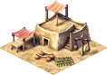

Work Camp

The Work Camp is the backbone of floodplain agriculture. Floodplain farms have no workers of their own — they rely entirely on peasant laborers dispatched from nearby Work Camps to till, sow, and harvest their fields. Without a Work Camp within walking distance, a floodplain farm will sit idle and produce nothing.
Work Camps serve a second role during the annual Inundation, when the Nile floods the fields and no farming is possible. The same laborers are redirected to the city's monument construction sites, hauling stone and bricks to skilled guild workers who build the great monuments of Egypt.
Meadow farms operate independently and do not need a Work Camp — only floodplain farms require peasant labor.
Stats
- Cost (Normal)
- 40 Db
- Cost by difficulty
- VE 12 · Easy 20 · Normal 40 · Hard 80 · VH 120
- Labor category
- Industry & Commerce
- Fire risk
- Medium (4)
- Damage risk
- Low (2)
Growing season (Nile receding)
Inundation (fields flooded)
Overview
Ancient Egypt's agricultural system was built around the Nile's annual flood cycle. Each year the river overflowed its banks, depositing a layer of rich, dark silt across the flood plain. When the waters retreated, the land was extraordinarily fertile — but the window to farm it was narrow, and the farms had no permanent buildings on the floodplain since the next flood would destroy them. Peasant labor gangs, organized from nearby settlements, were assigned to work the fields during the growing season.
The same peasants became monument builders during the Inundation. The construction of the great pyramids and tombs was not slave labour — it was organized corvée, a seasonal obligation fulfilled by free farmers who had nothing to do while their fields were underwater. The state fed, housed, and provisioned them. Work Camps in the game represent these staging points where peasant gangs were organized and dispatched.
Mechanics
Growing Season
Once per month the Work Camp dispatches a single Laborer figure. The laborer walks via roads to the nearest floodplain farm that needs a worker — one with no current laborer and fewer than 48 days of work remaining in its current cycle. When the laborer arrives, the farm begins its 96-day work cycle (roughly six months). At harvest time the farm sends out a cartpusher and resets, ready for the next laborer.
Inundation
When the Nile floods the plains, floodplain farms can no longer receive laborers. The Work Camp instead dispatches its laborer to the nearest active monument construction site (phase 0 or 1). The laborer walks to the site, levels an uncompleted tile, and returns. This cycle continues until the flood recedes and farming resumes.
A farm signals that it needs a new laborer when it is halfway through its current work cycle (at day 47 of 96). This pre-emptive request lets the Work Camp dispatch a replacement in time for seamless, uninterrupted farming across the nine-month growing season. If the Work Camp is too far away, or already has a laborer en route, the gap between laborers will cause the farm to stall.
Staffing and output
The Work Camp requires 20 workers from the city's labor pool. Understaffed camps dispatch laborers less frequently — a camp with very few workers may go months between dispatches, leaving farms idle. Keep the camp fully staffed by ensuring a nearby housing cluster can reach it via road.
Distance and output
Distance from Work Camp to farm has two effects:
- Travel time. The laborer must walk the full distance on foot using the road network. A distant farm means the laborer spends more time travelling and less time working, which reduces how many farms a single Work Camp can service.
- Worker effectiveness. When a laborer arrives, the number of effective farm workers is calculated based on how far the laborer walked. A laborer from a camp right next to the farm grants the farm its full workforce (up to 10 workers). One from a camp 20 tiles away grants only the minimum (2 workers), reducing the farm's yield.
| Camp-to-farm distance | Effective farm workers | Impact |
|---|---|---|
| 0–2 tiles | 10 (maximum) | Full yield |
| ~10 tiles | ~6 | Reduced yield |
| ~17 tiles | 2 (minimum) | Minimal yield |
| > 20 tiles | 2 (capped minimum) | Minimal yield |
One fully staffed Work Camp can support four to six nearby floodplain farms without interruption. Beyond six farms, some will occasionally miss a labor cycle and produce less. If monument construction is also needed, fewer laborers are available for farming during the inundation, which can leave some farms short at the start of the following growing season.
Monument work
Work Camps are also the primary source of unskilled labor for monument construction. Guild workers (Bricklayers, Stonemasons, Carpenters) provide the skilled craftsmanship but cannot move materials themselves — that task falls to the laborers from Work Camps, who haul blocks from Storage Yards to the construction site by sledge.
Monument construction speed is directly tied to how many Work Camps are active. During the growing season, laborers split their time between farms and monuments. During the Inundation, all laborers become available for monument work exclusively. Building additional Work Camps beyond what your farms require accelerates monument construction by keeping more laborers available year-round.
The laborer walks to the monument site, works on a single uncompleted tile, then returns to the Work Camp and the cycle starts again. If all monument tiles are either completed or already being worked by other laborers, the laborer turns back immediately.
Placement
Place Work Camps close to both the farms and the monument site. Laborers have a finite walking budget — a long walk means fewer work cycles per month and lower farm yields. As a rough guide, keep Work Camps within 10–15 road tiles of the farms they serve.
Work Camps require road access. Laborers leave via road and cannot reach farms or monuments on disconnected paths. Always verify road continuity between camp, farms, and monument.
Desirability is −3 at the building, falling off over 3 tiles. This is relatively mild compared to other industrial buildings. It is still worth grouping Work Camps with other low-desirability buildings — granaries, bazaars — on the edge of the farming zone, away from the housing cluster you want to evolve.
Tips
- Build your first Work Camp as soon as floodplain farms are available — no camp means no farm output, regardless of how many farms you place.
- One Work Camp per 4–5 farms is a reliable ratio for the early game. Add a second camp when farms start missing their labor cycle (right-click a farm to see its worker status).
- Place Work Camps closer to farms than monuments — during the inundation laborers will walk farther since there is nothing else to do, but during the growing season travel time directly costs yield.
- If a monument is stalling with guild workers idle at the site, the bottleneck is usually Work Camps, not materials. Add more camps to accelerate delivery.
- Multiple construction sites compete for the same laborer pool. Avoid running two monument projects simultaneously unless you have significantly more Work Camps than your farms require.
- Fire risk is Medium (4). Route a Firehouse patrol through the Work Camp cluster, especially when it sits next to wooden farm structures.
Developer reference
All paths relative to the repository root.
Building config — src/scripts/building/config.js
The static parameters are defined in src/scripts/building/config.js under the building_work_camp key (line 286).
building_work_camp = {
animations : {
preview : { pos:[0,0], pack:PACK_GENERAL, id:77 },
base : { pos:[0,0], pack:PACK_GENERAL, id:77 },
work : { pos:[25,-12], pack:PACK_GENERAL, id:77,
offset:1, max_frames:19, can_reverse:true, duration:3 },
minimap : { pack:PACK_GENERAL, id:149, offset:160 },
},
labor_category : LABOR_CATEGORY_INDUSTRY_COMMERCE,
meta : { help_id:81, text_id:179 }
info_sound : "Wavs/eng_r.wav"
building_size : 2,
cost : [ 12, 20, 40, 80, 120 ] // VeryEasy … VeryHard
desirability : { value:[-3], step:[1], step_size:[1], range:[3] }
laborers : [20], fire_risk : [4], damage_risk : [2]
flags { is_food: true }
}The desirability gradient: −3 at the building tile, improving by 1 per tile over 3 tiles (reaches 0 at 3 tiles out).
Spawn logic — src/building/building_work_camp.cpp
The Work Camp's core behavior lives in src/building/building_work_camp.cpp.
determine_worker_needed() scans all valid buildings and picks the nearest eligible target by squared distance:
// Floodplain farm eligible when:
// - Nile is in FLOOD_STATE_FARMABLE
// - farm has road access
// - farm->requested_workers() returns true
// (no current worker, labor_days_left <= 47, num_workers == 0)
// Monument eligible when:
// - monument phase < 2 (still under construction)
// - monument needs workersspawn_figure() creates a FIGURE_LABORER with the destination returned by determine_worker_needed(). The flag gameplay_change_work_camp_one_worker_per_month limits spawning to one laborer per month when enabled (tracked by base.spawned_worker_this_month, reset in update_month()).
Laborer behavior — src/figuretype/figure_worker.cpp
The figure_worker class in src/figuretype/figure_worker.cpp drives the laborer walker. Key state transitions:
// ACTION_10_WORKER_GOING — walking to destination via roads
// On arrival at a floodplain farm:
b_dest->num_workers = std::clamp<int>(
(1.f - bhome->tile.dist(b_dest->tile) / 20.f) * 12,
2, 10
);
d.work_camp_id = bhome->id;
d.labor_days_left = 96; // ~6 months
d.labor_state = LABOR_STATE_JUST_ENTERED;
// ACTION_10_WORKER_GOING — on arrival at a monument:
// Find first uncompleted tile, set its progress to 1,
// walk to that tile and level it (ACTION_12_WORKER_LEVELING_GROUND)
// ACTION_13_WORKER_BACK_FROM_WORKS — returning to the Work CampThe effective worker count formula means proximity matters significantly: a camp 0–2 tiles away grants the maximum 10 workers; one 17+ tiles away grants only the minimum 2. This directly affects farm yield at harvest.
Farm interaction — src/building/building_farm.cpp
The requested_workers() method in src/building/building_farm.cpp (line 256) determines when a farm asks for a new laborer:
bool building_farm::requested_workers() const {
auto &d = runtime_data();
return !d.worker_id && d.labor_days_left <= 47 && !num_workers();
}A farm with labor_days_left between 1 and 47 (the second half of the 96-day cycle) actively requests a new worker from any nearby Work Camp. After harvest the farm resets: work_camp_id = 0, labor_state = LABOR_STATE_NONE, num_workers = 0.
The farm's runtime_data_t fields relevant to Work Camp interaction:
uint8_t labor_days_left; // 0 = idle, 96 = freshly assigned
e_labor_state labor_state; // NONE / PRESENT / JUST_ENTERED
building_id work_camp_id; // ID of the Work Camp that sent this laborer
figure_id worker_id; // ID of the laborer figure currently assignedUI window — src/scripts/ui_work_camp_window.js
The right-click info panel is defined in src/scripts/ui_work_camp_window.js. It displays a status message based on the current state of the Work Camp's laborer:
if (b.has_road_access == false) → "no road access"
else if (b.num_workers == 0) → "needs workers" (text_id 2)
else if (dest.is_farm) → "working on floodplains" (id 5)
else if (dest.is_monument) → "working on monuments" (id 6)
else → "idle / looking for work" (id 3–4)The worker percentage description is drawn from group 179 (the Work Camp's meta.text_id), mapped via Math.approximate_value to one of five qualitative descriptions (IDs 4–8).
Game messages — src/scripts/game_messages_en.js
| Key | Approx. line | When shown |
|---|---|---|
message_work_camp_history (group ~78) |
~78 | History panel — full narrative on corvée labor, farm-to-camp ratios, and monument work. Triggered from in-game help (help_id 8). |
| Farming section (group ~557) | ~557 | Farming overview — explains floodplain vs meadow farms and the role of Work Camps. Referenced via help_id 45 (Farming). |
The Work Camp building name is string text_id 179 in the localization tables. help_id 81 maps to the in-game help panel for the building.